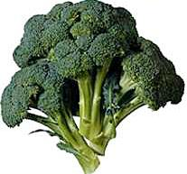

Brócoli y repollo

La siembra
Fecha: Se hacen los almácigos en noviembre o diciembre si son variedades tempranas; en enero y febrero si son de estación, y en agosto si se trata de variedades tardías.
Forma: Se siembra en almácigos y se transplanta cuando la plantita tiene de 4 a 6 hojas y unos 10 centímetros de alto.
Distancias: 50 centímetros entre plantas y 80 centímetros entre filas.
Cantidad de semillas (para 10m2): 2 gramos.
¿Qué tenemos que hacer para cuidar nuestro cultivo?
- Es un cultivo resistente a las heladas.
- El tiempo que los plantines deben quedar en el almácigo depende de cada variedad y de la época del año.
- Transplantar plantas sanas y fuertes, cuidar especialmente el riego y la sanidad de las raíces en ese momento. Es importante controlar la humedad durante todo el cultivo.
- Mantener limpio de malezas.
La cosecha
- La cosecha del repollo se inicia a los 90 días desde el transplante.
- Se recogen cuando las cabezas están bien formadas.
- El brócoli se cosecha entre los 70 y 100 días luego del transplante, según el cultivo sembrado. Seleccionamos las cabezas con las inflorescencias compactas, de intenso color verde y antes que abran las flores. Cortamos el tallo por debajo de la inflorescencia y también se pueden aprovechar los rebrotes que nacen posteriormente desde las yemas axilares.
Producción de semillas
Dejar plantas sanas y vigorosas para que florezcan y así poder cosechar las semillas.
Nota: Son de esta misma familia la coliflor y el repollito de Bruselas; la forma de plantarlos es similar, pero hay que tener en cuenta las distintas variedades y sus respectivos ciclos de crecimiento.